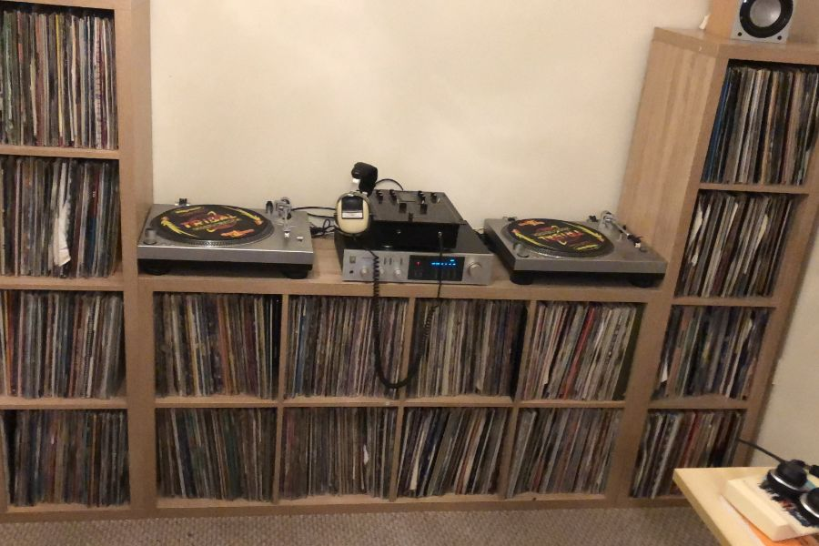

Thirteen years in Revenue and Sales Operations — forecasting, CRM, and getting teams working off the same numbers. Here's how I got here, what I'm proud of, and what I get up to outside work.
Thirteen years ago I was syncing production forecasts with a manufacturing site for a life sciences company. Today I'm the person to call in when the CRM has become a mess, forecasting is more guesswork than science, or the tech stack has quietly grown into something nobody fully understands anymore.
In between: PerkinElmer, Visiopharm, and most recently Enable International — always in Revenue or Sales Operations, always solving some version of the same problem. How do you get Sales, Marketing, Finance and Product working off the same numbers, trusting the same data, and spending less time on manual admin?
The tools keep changing. The problem hasn't. What has changed recently is how fast AI lets me solve it.
That's the thread through my career: less manual work, numbers people actually trust, and tools teams actually adopt instead of quietly ignoring.
I'm currently exploring what's next and I am open to advisory or fractional work with teams wrestling with the same forecasting, CRM, and AI-adoption problems I've spent the last 13 years solving.
If any of that sounds like your team, or you're just working through similar problems yourself, I'd genuinely like to hear about it — send me a message.
Utilised AI (Claude) to automate delivery of weekly funnel reporting to sales leadership, with an interactive HTML dashboard to allow the data to be sliced and diced as needed, allowing data driven decisions to be made confidently and quickly
Increased forecast accuracy from 60% to over 95% in 18 months within EMEA & India region across 3 separate business units
Integrated and connected 3 disparate technology platforms to enable true ROI measurement and pipeline attribution for Inbound and Outbound marketing activities
Developed and implemented a Salesforce “Dealer Portal” for a network of 3rd party agents, allowing them to manage and forecast deals within the main Salesforce instance with appropriate access restrictions
I am a keen amateur vinyl DJ with a penchant for collecting 80's and 90's EDM, as well as casual cycling when the British weather allows.
